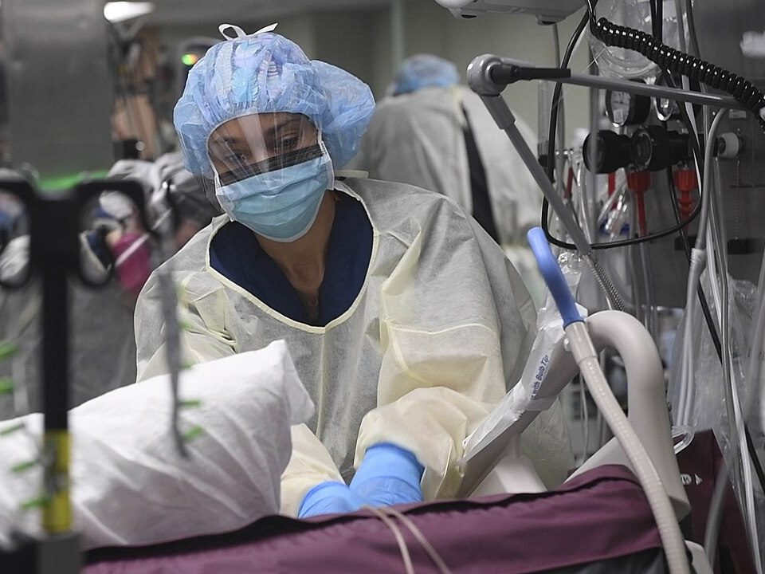
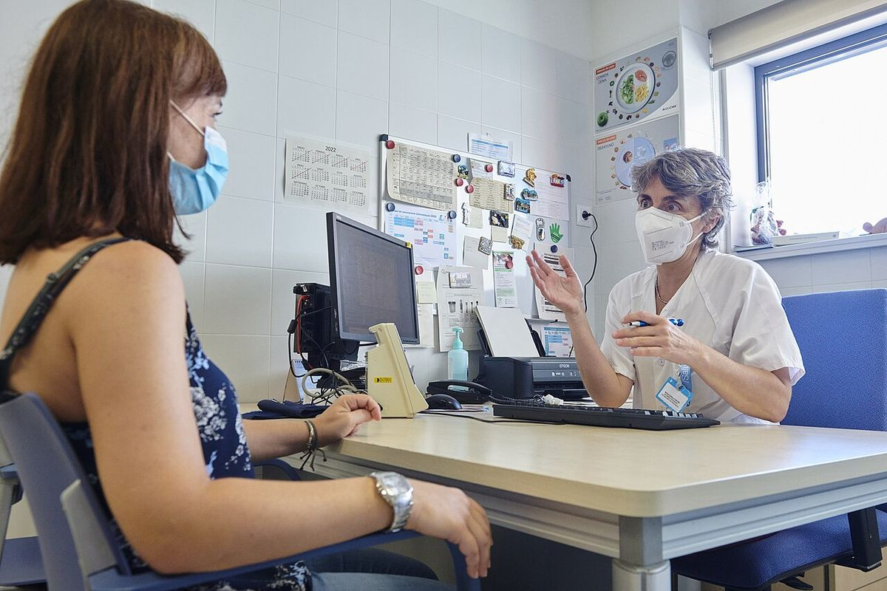

Para la enfermera en planta, primaria o urgencias
- Técnicas revisadas con las guías vigentes
- Calculadora de goteo y escalas de valoración
- Proceso enfermero con NANDA-I, NIC y NOC
Técnicas paso a paso, escalas y calculadoras, preparación del EIR y guías de cuidados en casa para pacientes y familias. Todo basado en guías clínicas vigentes y en datos oficiales.

El mismo rigor para todos, con el nivel de detalle que necesita cada persona.
Material, pasos, cuidados posteriores y errores frecuentes, con la guía en la que se basa cada ficha.
Los cinco momentos de la OMS y la técnica con solución alcohólica.
Elección del calibre y de la vena, inserción, fijación y vigilancia.
Los correctos, el doble chequeo y los medicamentos de alto riesgo.
Categorías, prevención y principios de la cura en ambiente húmedo.
La secuencia de reanimación en el adulto y el uso del DEA, según las guías de 2025.
Cómo sospecharla, el cribado con NEWS2 y lo que se hace en la primera hora, según la guía de 2026.
Funcionan en tu navegador y no guardan ningún dato. Cada una explica cómo se interpreta.
Gotas por minuto y mililitros por hora a partir del volumen y el tiempo.
Volumen a administrar, concentración de una dilución y dosis por peso.
Apertura ocular, respuesta verbal y respuesta motora, de 3 a 15 puntos.
Siete constantes que avisan a tiempo de que un paciente empeora, de 0 a 20 puntos.
Seis apartados, de 6 a 23 puntos: cuanto más baja, más riesgo.
Escala numérica, visual analógica y de caras para medir la intensidad del dolor.

Guías en lenguaje claro para cuidar a una persona dependiente: cambios posturales, caídas, disfagia, sonda, insulina, y qué ayudas ofrece la Ley de Dependencia a quien cuida.
Ver las guíasLa convocatoria vigente, cómo es el examen, preguntas de práctica y un quiz nuevo cada dos días.
Preparar el EIRLas guías y los datos oficiales que se han incorporado a la web, de la más reciente a la más antigua.
Ver las novedadesQué fuentes usamos, cómo se revisa cada ficha y por qué cada página indica su fecha de revisión.
Cómo elaboramos el contenido.jpg){kind=link}